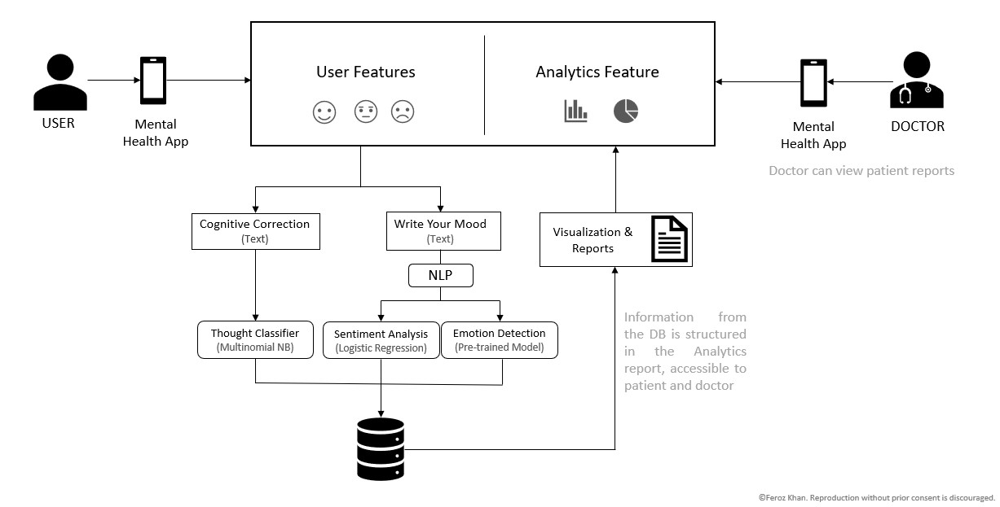

Project Descriptions
Short and readable write-ups.
Fine-Tuning CNN Architectures Using Transfer Learning
Context
Baseline CNN plateaued at 91% accuracy; required stronger generalization on limited labeled data.
Approach
- Converted 28×28 grayscale → 3-channel RGB; applied Resize / CenterCrop / Normalize transforms
- Built custom PyTorch Dataset + DataLoader ETL pipeline
- Loaded pretrained VGG16 (ImageNet) and ResNET models, froze backbone, replaced classifier head with custom head
- Trained with CrossEntropy + Adam using K-Fold CV and Bayesian Optuna tuning
Architecture

Result
Improved accuracy to 95.5% (+4.5%), reduced overfitting via weight decay tuning, and achieved faster convergence vs training from scratch for a domain-specific, smaller dataset.
Sentiment Analysis for Healthcare Domain with NLP & MLOps
Context
Built an NLP classification system to analyze rural patient text and assist urban therapists with sentiment signals and recurring thought categorization across 7 predefined mental health concern classes.
Approach
- Pipeline: Standardized preprocessing (tokenization, stopword removal, TF-IDF), strict train/validation split to prevent leakage, normalized SQL schema for storing predictions and metadata.
- Database: Designed and normalized SQL database to store text entries, timespamp, sensitive PII information. Wrote queries with JOINs.
- Models: Multinomial Naive Bayes (baseline) vs Logistic Regression (self-trained model).
- Experiments: MLflow-based tracking of hyperparameters, metrics, model artifacts, and version comparisons.
Architecture
Results
Logistic Regression improved accuracy from 72% (Naive Bayes baseline) to 94.65%, increased ROC-AUC to 0.84, and reduced cross-demographic F1 disparity by 12% via class rebalancing and threshold calibration. Improved recall for high-risk categories by 9%.
Agentic RAG with Hallucination Filtering & Self-Reflection
Context
Designed an agentic Retrieval-Augmented Generation (RAG) system to reduce hallucinations and improve factual grounding in multi-domain question answering.
Approach
- Routing: Query classification to vector DB (FAISS) or Tavily web search
- Retrieval: Embedding pipeline with MMR + multi-query expansion to improve recall and reduce redundancy
- Generation: Context-aware answer synthesis using OpenAI APIs
- Validation: Binary hallucination grading (LLM + NLI) with adaptive self-reflection and query rewriting
- Flow Control: LangGraph state machine for modular agent orchestration
Architecture

Metrics
Improved GPT-Judge factual accuracy by 15% vs baseline RAG, reduced retrieval redundancy by 20%, and decreased hallucination rate by 18% in simulated evaluation.
Deployment & MLOps
Containerized with Docker, deployed on AWS EC2/SageMaker, CI/CD via GitHub Actions, and exposed scalable FastAPI endpoints with Pydantic validation.
Key Design Decisions
Adopted agentic routing for modularity, integrated automated hallucination grading for reliability, and prioritized retrieval diversity (MMR + multi-query) to improve grounding.